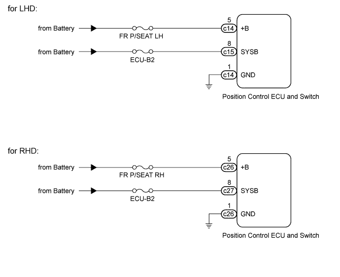
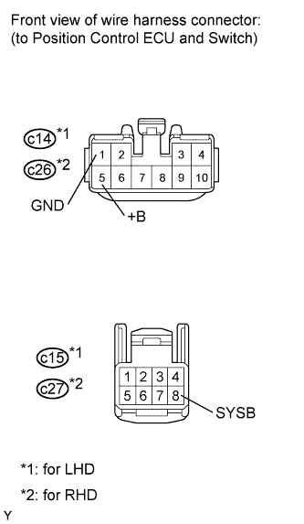

FRONT POWER SEAT CONTROL SYSTEM (w/ Seat Position Memory System) > Front Power Seat does not Operate with Front Power Seat Switch |

| 1.INSPECT FUSE (FR P/SEAT LH, FR P/SEAT RH, ECU-B2) |
Remove the FR P/SEAT LH*1, FR P/SEAT RH*2 and ECU-B2 fuses from the main body ECU.
Measure the resistance according to the value(s) in the table below.
| Tester Connection | Condition | Specified Condition |
| FR P/SEAT LH fuse | Always | Below 1 Ω |
| ECU-B2 fuse | Always | Below 1 Ω |
| Tester Connection | Condition | Specified Condition |
| FR P/SEAT RH fuse | Always | Below 1 Ω |
| ECU-B2 fuse | Always | Below 1 Ω |
|
| ||||
| OK | |
| 2.CHECK HARNESS AND CONNECTOR (POSITION CONTROL ECU AND SWITCH - BATTERY AND BODY GROUND) |
 |
Disconnect the c14*1, c15*1 or c26*2, c27*2 switch connectors.
Measure the voltage according to the value(s) in the table below.
| Tester Connection | Condition | Specified Condition |
| c14-5 (+B) - Body ground | Always | 11 to 14 V |
| c15-8 (SYSB) - Body ground | Always | 11 to 14 V |
| Tester Connection | Condition | Specified Condition |
| c26-5 (+B) - Body ground | Always | 11 to 14 V |
| c27-8 (SYSB) - Body ground | Always | 11 to 14 V |
Measure the resistance according to the value(s) in the table below.
| Tester Connection | Condition | Specified Condition |
| c14-1 (GND) - Body ground | Always | Below 1 Ω |
| Tester Connection | Condition | Specified Condition |
| c26-1 (GND) - Body ground | Always | Below 1 Ω |
|
| ||||
| OK | ||
| ||